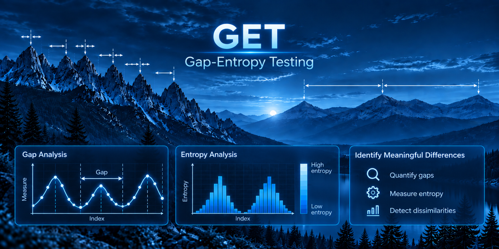
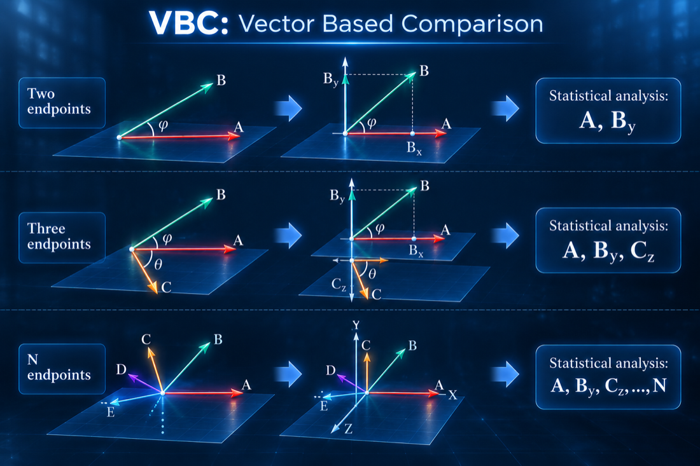
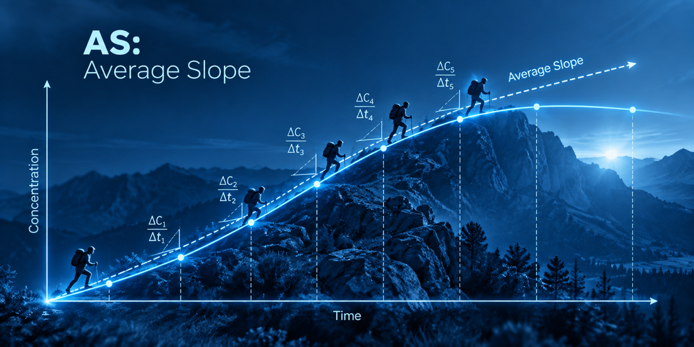
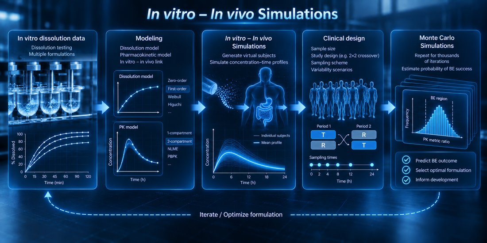

Selected Methodological Contributions
Research programmes built around a concrete problem, a proposed idea, and evidence of why it matters.
Gap-Entropy Testing (GET)
GET is a novel statistical measure for revealing hidden patterns in the gaps between observations, beyond what the t-test can capture.

- Problem
- Classical location-based tests may miss structural differences between datasets.
- Proposed idea
- Use the entropy of ordered observation gaps to quantify hidden distributional structure.
- Why it matters
- It provides a complementary lens when equal means do not imply similar data-generating patterns.
- Karalis V. Gap-Entropy Testing (GET): A Framework for Structural and Distributional Differences. Applied Mathematics and Statistics [2026]. Article. Seminal article
Vector-based Comparison (VBC)
VBC is an alternative framework for considering endpoints in clinical studies. It treats endpoints as vectors in an N-dimensional space.

- Problem
- Multi-endpoint clinical evidence is often reduced to separate, disconnected comparisons.
- Proposed idea
- Represent endpoints as vectors and decompose their shared and orthogonal components.
- Why it matters
- It creates a geometric framework for examining endpoint relationships beyond isolated summaries.
- Karalis V. A Vector Theory of Assessing Clinical Trials: An Application to Bioequivalence. J Cardiovasc Dev Dis [2024]. Article. Seminal article
- Kokkali M, Karalis V. Vector-Based Comparison and Average Slope Can Refine Bioequivalence Claims: A Machine and Deep Learning Approach. Biopharm Drug Disp [2026]. doi: 10.1002/bdd.70023
- Kokkali M, Karalis V. Vector-based Comparison as a Novel Framework for Assessing Multi-endpoint Clinical Trials: Applications to Actual Data. Clinical and Translational Discovery [2026]. doi: 10.1002/ctd2.70180
AI-generated subjects in clinical studies
The use of generative artificial neural networks, including Normalizing Flow, WGANs, and VAEs, for synthesizing virtual subjects, thereby reducing the need for actual human exposure and reducing time and costs.
- Problem
- Clinical studies are constrained by recruitment, cost, time, and unnecessary human exposure.
- Proposed idea
- Develop generative models for scientifically controlled virtual and hybrid populations.
- Why it matters
- Validated augmentation may support smarter study design without treating synthetic data as real evidence.
- Papadopoulos D, Karalis V. Variational Autoencoders for Data Augmentation in Clinical Studies. Applied Sci [2023]. Article. Seminal article
- Papadopoulos D, Karalis V. Introducing an Artificial Neural Network for Virtually Increasing the Sample Size of Bioequivalence Studies. Applied Sci [2024]. doi.org/10.3390/app14072970
- Nikolopoulos A, Karalis V. Implementation of a Generative AI algorithm for Virtually Increasing the Sample Size of Clinical Studies. Applied Sciences [2024]. doi.org/10.3390/app14114570.
- Papadopoulos D, Karali G, Karalis V. Bioequivalence Studies of Highly Variable Drugs: An Old Problem Addressed by Artificial Neural Networks. Applied Sciences [2024]. doi.org/10.3390/app14125279.
- Nikolopoulos A, Karalis V. Artificial Intelligence Meets Bioequivalence: Using Generative Adversarial Networks for Smarter, Smaller Trials. Machine Learning and Knowledge Extraction [2025]. https://doi.org/10.3390/make7020047.
- Nikolopoulos A, Karalis V. Generative Neural Networks for Addressing the Bioequivalence of Highly Variable Drugs. Algorithms [2025]. https://doi.org/10.3390/a18050266
- Nikolopoulos A, Karalis V. The Use of Generative AI to Create Hybrid Populations for Bioequivalence Trials. Applied Math Stat [2026]. https://doi.org/10.53941/ams.2026.100003
- Papavramidou N, Karalis V. Generative Data Augmentation in Clinical Studies: A Normalizing Flow Framework with an Inferential Bias-Variance Perspective. Applied Sciences [2026]. https://doi.org/10.3390/app16104692
Average Slope (AS)
AS is a new pharmacokinetic parameter proposed to express more appropriately the rate of absorption and replace Cmax. AS is calculated directly from the concentration-time data without any assumptions.

- Problem
- Cmax is widely used as an absorption-rate metric although it also depends on disposition.
- Proposed idea
- Estimate absorption rate directly from concentration–time data through the Average Slope metric.
- Why it matters
- It seeks a more interpretable and data-driven measure for bioequivalence assessment.
- Karalis V. On the Interplay between Machine Learning, Population Pharmacokinetics, and Bioequivalence to Introduce Average Slope as a New Measure for Absorption Rate. Applied Sci [2023]. Article. Seminal article
- Karalis V. An In-Silico Approach Toward the Appropriate Absorption Rate Metric in Bioequivalence. Pharmaceuticals [2023]. doi: 10.3390/ph16050725.
- Kokkali M, Karalis V. Average Slope vs. Cmax: Which Truly Reflects the Drug Absorption Rate? Applied Sciences [2024]. doi.org/10.3390/app14146115.
Machine learning in bioequivalence
This research direction introduces the use of machine learning approaches in bioequivalence studies.
- Problem
- Conventional bioequivalence analyses can overlook nonlinear patterns and interacting sources of variability.
- Proposed idea
- Use machine and deep learning to interrogate metrics, endpoints, and decision patterns.
- Why it matters
- It expands the analytical toolkit while keeping the clinical question—not the algorithm—at the centre.
- Karalis V. Machine Learning in Bioequivalence: Towards Identifying an Appropriate Measure of Absorption Rate. Applied Sci [2023]. Article. Seminal article
In Vitro - In Vivo Simulations (IVIVS)
IVIVS introduces a semi-physiological modeling approach proposed to predict the outcome of a bioequivalence study based on in vitro dissolution data.

- Problem
- In vitro dissolution differences do not translate directly into expected clinical outcomes.
- Proposed idea
- Connect dissolution profiles with semi-physiological pharmacokinetic simulations.
- Why it matters
- It links formulation behaviour to prospective bioequivalence risk and study planning.
- Vlachou M, Karalis V. An In Vitro - In Vivo Simulation Approach for the Prediction of Bioequivalence. Materials 14(3):555 [2021]. Article. Seminal article